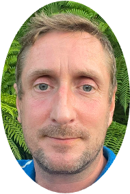

Kameliya Krachunova
Former member, Bournemouth University
Individual Differences, Visual Saliency and Eye Movements, Visual Illusions

Mark Gather
Former member, Bournemouth University
Touch Perception, Multisensory Perception, Shape Perception
Nuzhah Saumtally
Former member, Bournemouth University
Colour Vision, EEG decoding
Anushka Shendye
Former member, Bournemouth University
Clinical and Developmental Neuropsychology

Zeynep Sude Yesilova
Former member, Bournemouth University
Eye Tracking, Visual Impairment Detection and Vision Screening
Tao Chen
Former member
Machine Learning, Computer Vision, Deep Learning, Pose Estimation and Robotics